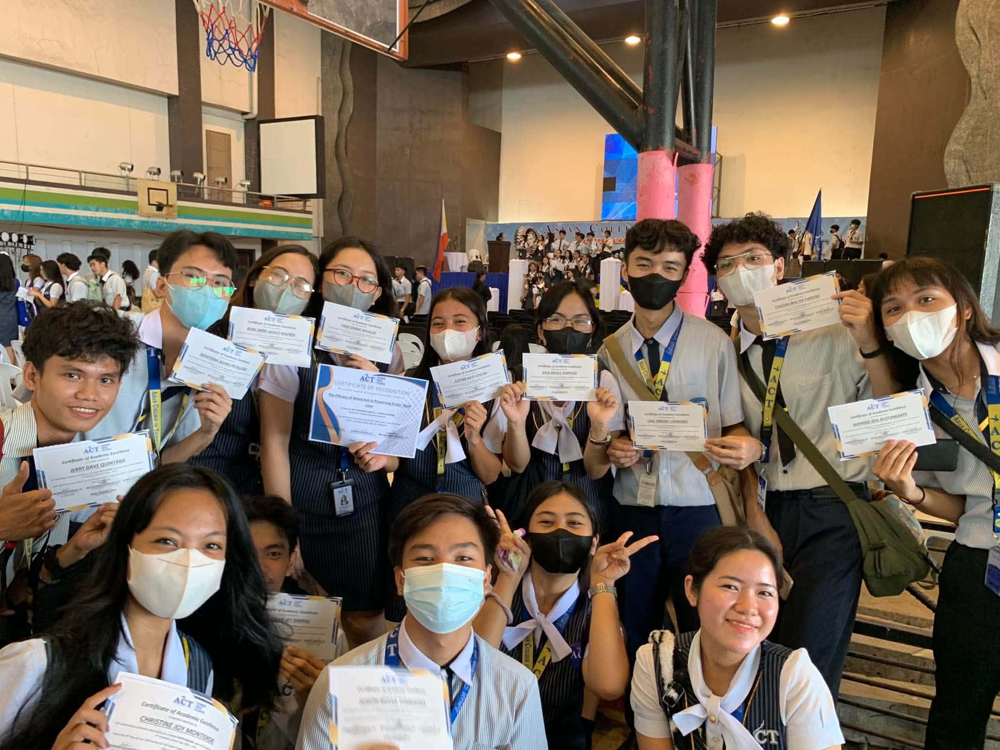
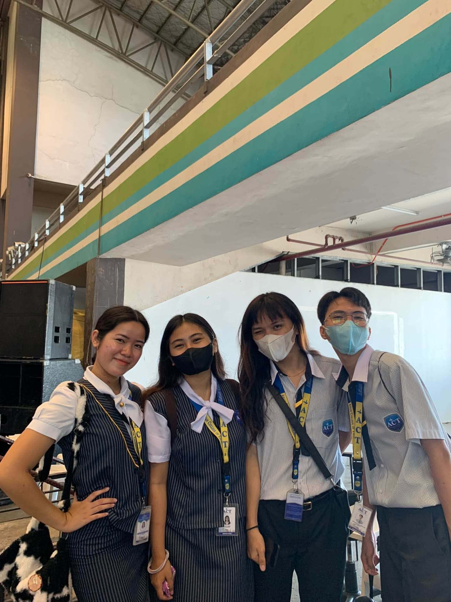
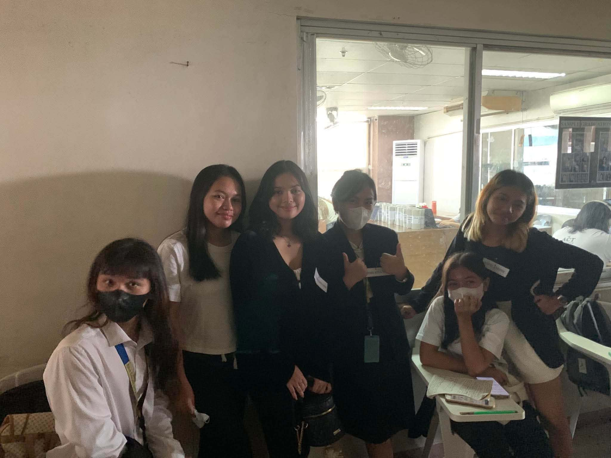
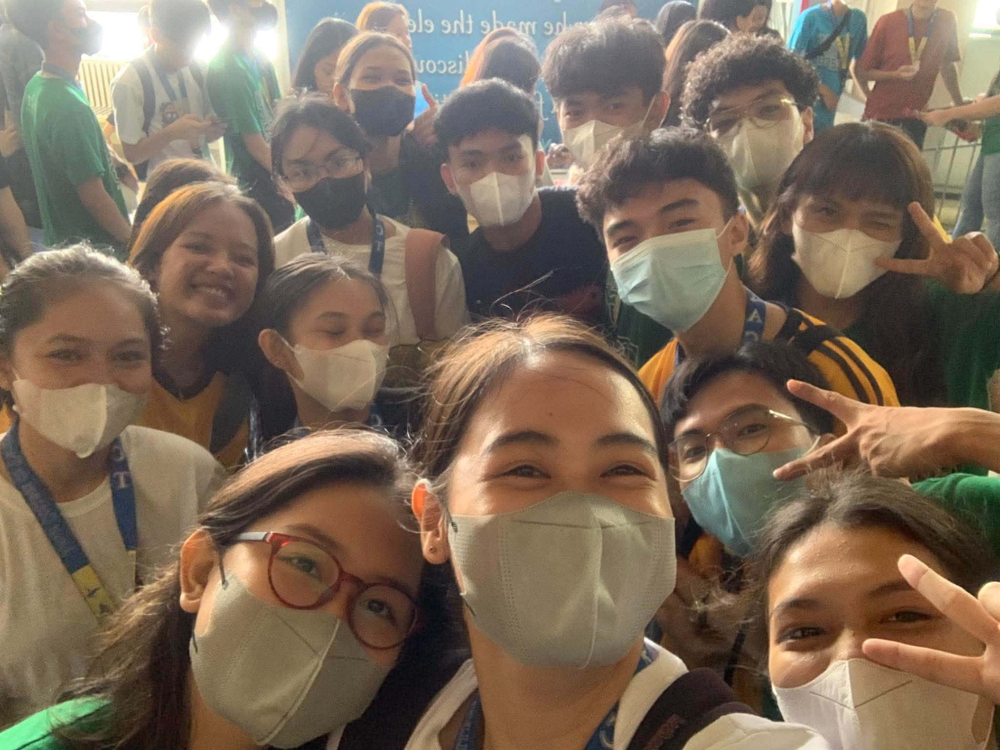

My Senior High School journey was one of the most memorable experiences in my life. When I was in Grade 11, our classes were still conducted online because of the pandemic. At that time, I felt that school was somehow easier because everything was done online. The activities and requirements were more manageable, and I could study from the comfort of my own home. However, I also missed the experience of being in a real classroom and spending time with classmates.

When I moved to Grade 12, things became very different because we started having more face-to-face interactions. At first, I was quite shy and nervous because most of my classmates did not really know me yet, especially because of my identity. I was not sure how they would see or accept me, so I was a little uncomfortable showing my real personality at first. I slowly learned to become more confident and comfortable around them as the days went by.

As time passed, I met new friends and became closer to my classmates. We shared jokes, stories, activities, group projects, and many unforgettable moments together. I also learned many new lessons, not only from our subjects but also from my experiences with other people. Of course, Senior High School was not always easy because there were many challenges, deadlines, presentations, and stressful moments. But those challenges helped me become more responsible, patient, and confident. One of the most memorable moments of my Senior High School journey was graduating with honors together with my classmates and friends. It felt very special because we had all experienced different struggles and challenges throughout our Senior High School years. Being able to celebrate our graduation together made the achievement even more meaningful.

Looking back, my Senior High School experience was a mixture of challenges, friendships, lessons, laughter, and unforgettable memories. From having online classes during Grade 11 to meeting new people and becoming more confident in Grade 12, I experienced many changes that helped me grow as a person. Graduating with honors alongside my friends and classmates is definitely one of the best experiences and memories of my Senior High School days.
